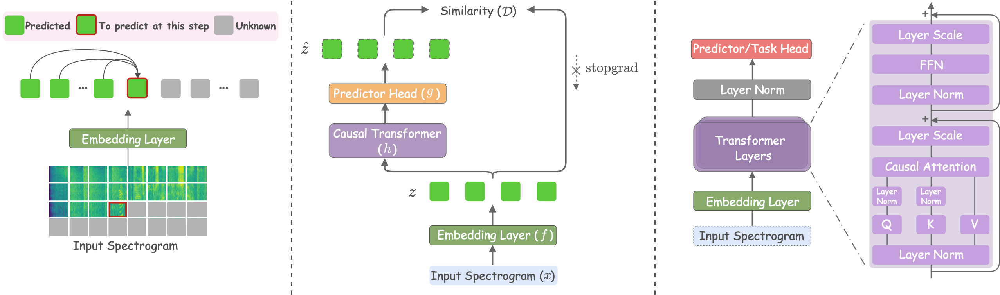
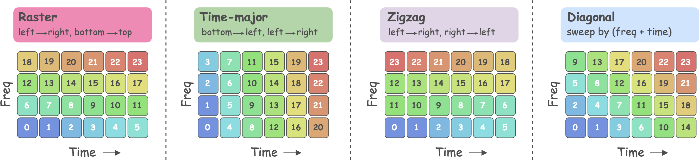
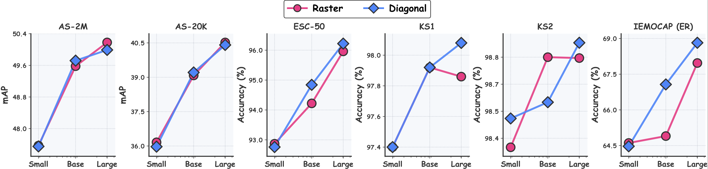
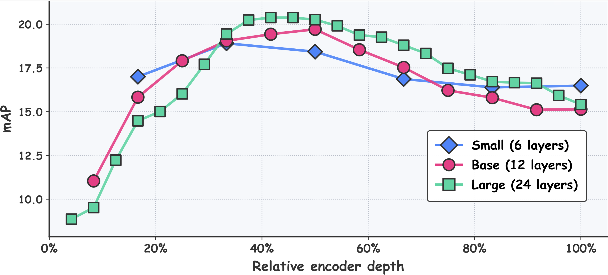
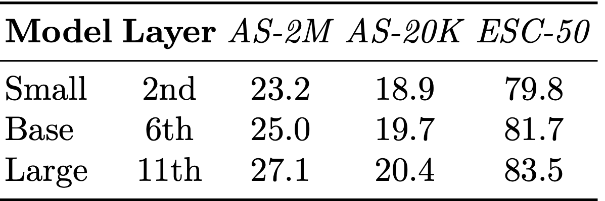
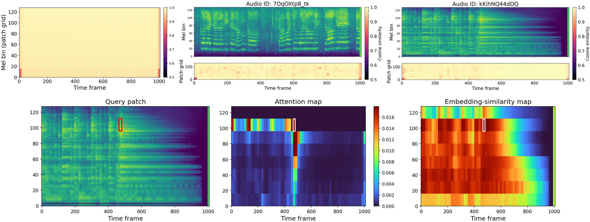

Abstract
We introduce NAPE (Next Audio Patch Embedding prediction), a self-supervised framework for audio representation learning in which a causal Transformer predicts each next patch embedding of a log-mel spectrogram from the preceding ones, using causal masking and stop-gradient as its sole training signal. Unlike existing audio SSL methods that rely on reconstruction decoders, acoustic tokenizers, student-teacher setups, or auxiliary regularization losses, NAPE's design is deliberately minimalist. Across six audio and speech benchmarks, NAPE achieves state-of-the-art fine-tuning performance on several tasks, yields strong linear-probing results, and scales consistently across encoder sizes.
Method
Predicting the next patch, one step at a time
Given a log-mel spectrogram, NAPE splits it into non-overlapping patches and projects each into an embedding, producing a 2D grid. A scanning order linearizes the grid into a 1D sequence; a causal Transformer encoder processes it and a lightweight predictor head estimates the next patch embedding. Prediction quality is measured by negative cosine similarity to the target embedding under a stop-gradient, analogous to next-token prediction, but in a continuous embedding space.

Three ingredients, no heuristics
Three complementary mechanisms prevent NAPE from collapsing to trivial solutions, and together define its entire training regime.
01
Causality
A causal mask restricts each position to prior patches, blocking the trivial identity mapping.
02
Prediction shift
Position t predicts patch t+1, so causality can't be side-stepped by copying the current input.
03
Stop-gradient
The target is treated as constant, preventing the encoder from collapsing to a shared vector.
Scanning order matters for audio
Because causal prediction depends on which patches are "past," the order in which the 2D grid is linearized imposes a real inductive bias. We study four orders; those that advance in time, raster and diagonal, work best, matching how acoustic events unfold.

Results
Competitive with far more elaborate recipes
NAPE-B with diagonal scan matches or exceeds every self-supervised competitor of comparable size. Scaled up, NAPE-L ties the strongest baseline on AudioSet-2M and transfers especially well to speech.
mAP
mAP
accuracy
+3.5 vs best
| Model | #Par. | AS-2M | AS-20K | ESC-50 | KS1 | KS2 | ER |
|---|---|---|---|---|---|---|---|
| SS-AST (Huang et al., 2022) | 89M | - | 31.0 | 88.8 | 96.0 | 98.0 | 59.6 |
| MAE-AST (Baade et al., 2022) | 86M | - | 30.6 | 90.0 | 95.8 | 97.9 | 59.8 |
| CAV-MAE (Gong et al., 2023) | 86M | 44.9 | 34.2 | - | - | - | - |
| Audio-MAE (Huang et al., 2022) | 86M | 47.3 | 37.1 | 94.1 | 96.9 | 98.3 | - |
| Audio-MAE L (Huang et al., 2022) | 304M | 47.4 | 37.7 | - | - | - | - |
| data2vec (Baevski et al., 2022) | 94M | - | 34.5 | - | - | - | - |
| MaskSpec (Chong et al., 2023) | 86M | 47.1 | 32.3 | 89.6 | - | 97.7 | - |
| BEATs (Chen et al., 2022) | 90M | 48.0 | 38.3 | 95.6 | 97.7 | 98.3 | 64.5 |
| A-JEPA (Fei et al., 2023) | 86M | 48.6 | 38.4 | 96.3 | 97.7 | 98.5 | - |
| ASiT (Ahmed et al., 2024) | 86M | 48.0 | 38.6 | 95.3 | 98.2 | 98.9 | — |
| EAT (Chen et al., 2024) | 88M | 48.6 | 40.2 | 95.9 | — | 98.3 | — |
| SSLAM (Alex et al., 2025) | 88M | 50.2 | 40.9 | 96.2 | 98.8 | 98.1 | — |
| SPEAR (Yang et al., 2026) | 327M | 50.2 | 40.9 | 96.2 | 98.8 | 98.1 | — |
| NAPE-B diagonal | 85M | 49.7 | 39.2 | 94.8 | 97.9 | 98.6 | 67.1 |
| NAPE-L raster | 303M | 50.2 | 40.5 | 96.0 | 97.9 | 98.8 | 68.0 |
Self-supervised methods pre-trained on AudioSet. Full comparison table in the paper.
Favorable scaling
NAPE improves on every benchmark as the encoder grows from Small (~19M) to Base (~85M) to Large (~303M) parameters, supporting next-patch-embedding prediction as a scalable objective.

Linear probing
Discriminative features, mid-network
Even under a strict feature-freeze, NAPE's representations stay discriminative. The best probing layer sits around the middle of the encoder, the top layers specialize for the prediction objective, while mid-layers retain more general, classification-relevant information. Probing performance also scales positively with model size.


Qualitative analysis
Structure without supervision
NAPE predicts next-patch embeddings with high cosine similarity on unseen audio. Its attention reasons jointly about the current spectral context and the frequency-consistent temporal history, and its predicted embeddings group acoustically-similar patches together, all without any explicit labels.

Citation
BibTeX
@article{nape2026,
title = {Listening Forward: Next Patch Embedding Prediction Enables Scalable Audio Learners},
author = {Umberto Cappellazzo, Xubo Liu, Stavros Petridis, Maja Pantic},
journal = {arXiv preprint arXiv:XXXX.XXXXX},
year = {2026}
}